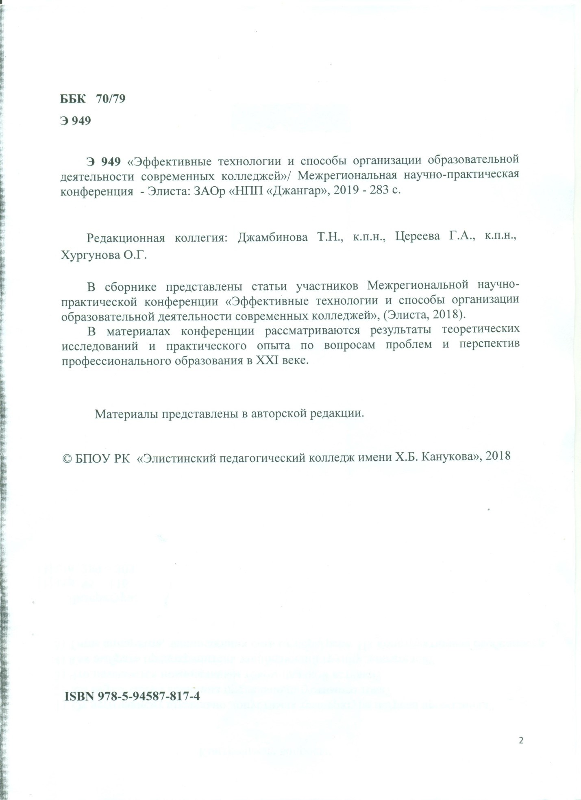

Опубликованные научные статьи, методические и дидактические разработки по вопросам реализации основной профессиональной образовательной программы (ОПОП)
| № | Название сборника | Название доклада | Документ, ссылка |
| 1 | Материалы Межрегиональной научно-практической конференции «Эффективные технологии и способы организации образовательной деятельности современных колледжей», Элиста, ЗАОр «НПП «Джангар», 2019г-283с. | Метод проекта при изучении спецдисциплин | dropbox.com/s/nzcb1rhjiuydo9s/Сборник%20НПК.%202018.pdf?dl=0 |
| 2 | Международный педагогический портал «Солнечный свет» | Приборы системы питания карбюраторных двигателей | Свидетельство о СМИ ЭЛ № ФС 77-65391 |
